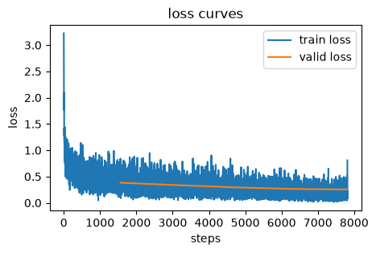

import lucidlearn.core as ll
import lucidlearn.nn as nnlucidlearn
A transparent, concise machine learning framework in JAX inspired by
miniai from fastai/course22p2 and optimized for efficient TPU usage.
Installation
Install latest from the GitHub repository:
$ pip install git+https://github.com/frenio/lucidlearn.gitor from pypi
$ pip install lucidlearnHow to use
Other Imports
import jax
import jax.numpy as jnp
from jax import random
random_key = jax.random.key(42)
import optax
import torch
from torchvision import datasets, transformsLoad Data (Fashion-MNIST)
train_data = datasets.FashionMNIST(root="./data", train=True, download=True, transform=transforms.ToTensor())
test_data = datasets.FashionMNIST(root="./data", train=False, download=True, transform=transforms.ToTensor())
x_train_all = train_data.data[:, None, :, :]/255
y_train_all = train_data.targets
rand_idx = torch.randperm(x_train_all.shape[0])
x_train = x_train_all[rand_idx[:50_000]]
train_mean = x_train.mean()
train_std = x_train.std()
x_train = jnp.array((x_train - train_mean) / train_std)
y_train = jnp.array(y_train_all[rand_idx[:50_000]])
x_valid = jnp.array((x_train_all[rand_idx[50_000:]] - train_mean) / train_std)
y_valid = jnp.array(y_train_all[rand_idx[50_000:]])
x_test = jnp.array((test_data.data[:, None, :, :]/255 - train_mean) / train_std)
y_test = jnp.array(test_data.targets)
x_train.shape, y_train.shape, x_valid.shape, y_valid.shape, x_test.shape, y_test.shape,((50000, 1, 28, 28),
(50000,),
(10000, 1, 28, 28),
(10000,),
(10000, 1, 28, 28),
(10000,))idx_to_class = {value: key for key, value in train_data.class_to_idx.items()}
num_classes = len(idx_to_class)
idx_to_class, num_classes({0: 'T-shirt/top',
1: 'Trouser',
2: 'Pullover',
3: 'Dress',
4: 'Coat',
5: 'Sandal',
6: 'Shirt',
7: 'Sneaker',
8: 'Bag',
9: 'Ankle boot'},
10)Create DataLoaders
train_ds = ll.Dataset(x_train, y_train)
valid_ds = ll.Dataset(x_valid, y_valid)
test_ds = ll.Dataset(x_test, y_test)bs = 32
train_dl = ll.DataLoader(train_ds, batch_size=bs, shuffle=True)
valid_dl = ll.DataLoader(valid_ds, batch_size=bs, shuffle=True)
test_dl = ll.DataLoader(test_ds, batch_size=bs, shuffle=False)dls = ll.DataLoaders(train_dl, valid_dl)one_batch = next(iter(dls.train))[0]
one_batch.shape(32, 1, 28, 28)Define Model Dict and Build Model
model_dict = {'Conv2d_1': {'make_fn': nn.make_conv2d, 'args': (8, 1), 'kwargs': {'strides': (2, 2), 'act': True}},
'LayerNorm_1': {'make_fn': nn.make_layernorm2d, 'args': (8,), 'kwargs': {'ndims': 4}},
'Conv2d_2': {'make_fn': nn.make_conv2d, 'args': (16, 8), 'kwargs': {'strides': (2, 2), 'act': True}},
'LayerNorm_2': {'make_fn': nn.make_layernorm2d, 'args': (16,), 'kwargs': {'ndims': 4}},
'Conv2d_3': {'make_fn': nn.make_conv2d, 'args': (32, 16), 'kwargs': {'padding': 'VALID', 'strides': (2, 2), 'act': True}},
'LayerNorm_3': {'make_fn': nn.make_layernorm2d, 'args': (32,), 'kwargs': {'ndims': 4}},
'Conv2d_4': {'make_fn': nn.make_conv2d, 'args': (64, 32), 'kwargs': {'padding': 'VALID', 'strides': (1, 1), 'act': True}},
'LayerNorm_4': {'make_fn': nn.make_layernorm2d, 'args': (64,), 'kwargs': {'ndims': 4}},
'Squeeze' : {'make_fn': nn.make_squeeze, 'args': (), 'kwargs': {'dims': (2, 3)}},
'Linear_1': {'make_fn': nn.make_linear, 'args': (64, num_classes), 'kwargs': {'act': False}}}params, model = ll.make_model(random_key, model_dict)sum(p.size for p in jax.tree_util.tree_leaves(params))25274model(params, one_batch).shape(32, 10)Training
metrics = ll.MetricsCB(ll.accuracy)
lr_rec = ll.LRRecorderCB()
loss_rec = ll.LossRecorderCB()
cbs = [ll.DeviceParallelCB(), ll.OneCycleCB(), metrics, lr_rec, loss_rec]
learn = ll.Learner(model, params, dls, loss_func=optax.softmax_cross_entropy_with_integer_labels, lr=0.01, cbs=cbs, opt=optax.adamw)learn.fit(5)Epoch accuracy loss Mode
----------------------------------------
0 0.8130 0.5247 train
0 0.8596 0.3827 eval
1 0.8677 0.3623 train
1 0.8817 0.3375 eval
2 0.8913 0.2978 train
2 0.8914 0.2952 eval
3 0.9104 0.2413 train
3 0.9054 0.2648 eval
4 0.9327 0.1840 train
4 0.9099 0.2552 evalloss_rec.plot()